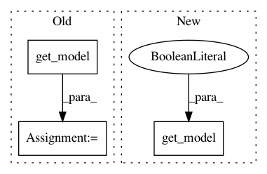

9f0b230e1f59cb399e36210483bc075760b02eaf,scripts/detection/ssd/eval.py,,,#,70
Before Change
// network
net_name = "_".join(("ssd", str(args.data_shape), args.network))
net = get_model(net_name, classes=len(classes), pretrained=0) // load pretrained base network
net.load_params(args.pretrained.strip())
// training
After Change
// network
net_name = "_".join(("ssd", str(args.data_shape), args.network, args.dataset))
if args.pretrained.lower() in ["true", "1", "yes", "t"]:
net = gv.model_zoo.get_model(net_name, pretrained=True)
else:
net = gv.model_zoo.get_model(net_name, pretrained=False)
net.load_params(args.pretrained.strip())
In pattern: SUPERPATTERN
Frequency: 3
Non-data size: 3
Instances
Project Name: dmlc/gluon-cv
Commit Name: 9f0b230e1f59cb399e36210483bc075760b02eaf
Time: 2018-04-11
Author: cheungchih@gmail.com
File Name: scripts/detection/ssd/eval.py
Class Name:
Method Name:
Project Name: dmlc/gluon-cv
Commit Name: 2318052dc79966bf36675606b7d992a347418292
Time: 2019-01-07
Author: cheungchih@gmail.com
File Name: scripts/detection/yolo/train_yolo3.py
Class Name:
Method Name:
Project Name: RasaHQ/rasa
Commit Name: 2915f33ac9a5878093cdbd70c3dd8f11569113ed
Time: 2019-03-04
Author: t.wochinger@rasa.com
File Name: tests/test_model.py
Class Name:
Method Name: test_get_model_from_directory_with_subdirectories